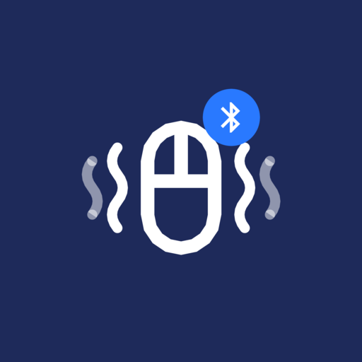

Embedded Linux
Platform bring-up, services, system integration, and troubleshooting across the Linux stack.
Firmware · Embedded Systems · Linux
I'm jaehyoo, a firmware engineer interested in platform software, embedded Linux, and the systems that make complex hardware work reliably.
01 — ABOUT
I work at the intersection of firmware, operating systems, and hardware behavior—where details matter and the root cause is not always obvious.
This site is a home for selected projects, technical notes, and lessons learned from building and debugging embedded platforms. I value clear interfaces, maintainable code, thoughtful collaboration, and evidence-driven problem solving.
Follow behavior across hardware, firmware, and software layers.
Use logs, traces, registers, and reproducible tests to find the facts.
Prefer clear designs that teams can reason about and extend.
02 — EXPERTISE
A practical, systems-level approach to firmware development and platform integration.
Platform bring-up, services, system integration, and troubleshooting across the Linux stack.
Management-controller behavior, hardware status, power sequencing, and firmware update flows.
Low-level interfaces and register-level integration between silicon, logic, and platform software.
Root-cause analysis, failure handling, observability, and repeatable validation workflows.
03 — SELECTED WORK
Things I build in my own time.

Turns an Android phone into a Bluetooth touchpad and mouse jiggler that keeps a PC awake with nothing to install on the PC, or moves a real mouse placed on the phone screen.
HOW I WORK
Observe
Gather facts before forming a theory.
Isolate
Reduce the problem to a testable boundary.
Validate
Confirm the fix and document the result.
04 — CONTACT
I'm always interested in thoughtful engineering conversations and useful technical exchanges.